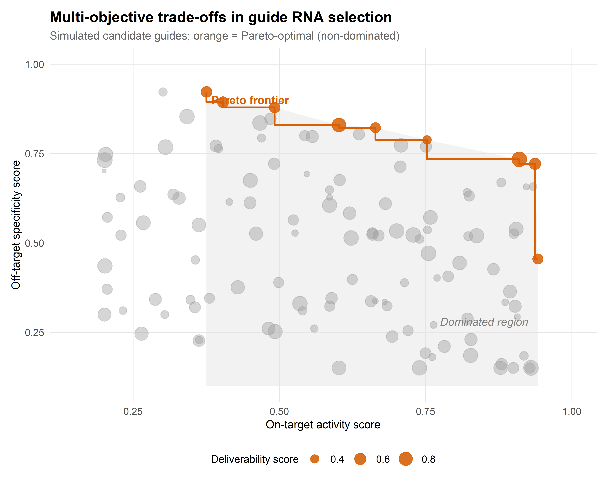
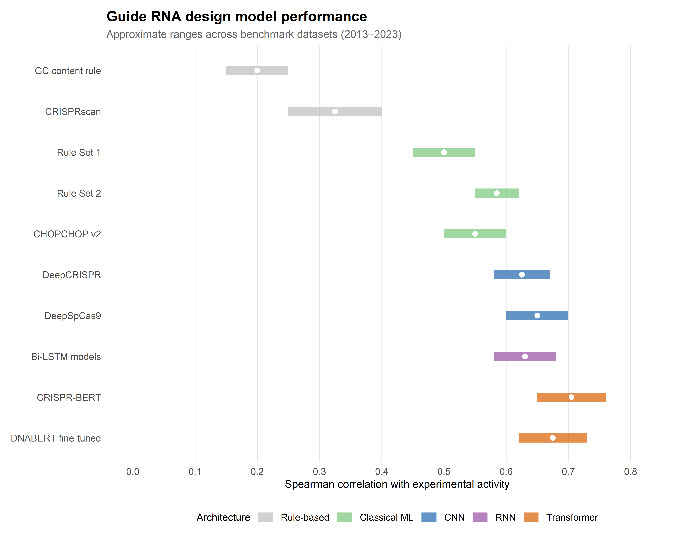

2 AI for Guide RNA Design and Off-Target Prediction
2.1 Introduction: the computational challenge of guide selection
The programmability of CRISPR systems, celebrated as their defining advantage over previous genome editing platforms, conceals a substantial computational problem. For any given target gene, hundreds to thousands of candidate guide RNA (gRNA) sequences may satisfy the basic requirement of complementarity to a unique genomic locus adjacent to a PAM motif. Yet these candidates vary enormously in their on-target cleavage efficiency — often by an order of magnitude or more — and in the number and severity of off-target cleavage events they produce elsewhere in the genome (Doench et al., 2014). Selecting the optimal guide for a given application is therefore not a trivial lookup but a prediction problem of considerable complexity, in which the inputs include the guide sequence itself, its thermodynamic properties, the local chromatin environment, the specific Cas protein employed, and the delivery context.
What follows is an account of how the field has addressed this prediction problem, from early heuristic rules through classical machine learning to contemporary deep learning architectures. The chapter’s central claim is that the transition to learned models has genuinely improved on-target activity and off-target specificity prediction — but that these improvements remain unevenly distributed across CRISPR system types, genomic contexts, and cell types, and that they have redistributed epistemic authority in ways worth examining. Who decides which guides enter an experiment, and on the basis of what evidence, are questions that track the shifting boundary between computational and bench expertise.
2.2 Rule-based and biophysical approaches: the pre-ML era
2.2.2 Thermodynamic models of gRNA–DNA hybridisation
A complementary approach modelled gRNA efficacy in biophysical terms: the free energy of hybridisation between guide and target, the stability of secondary structures within the guide RNA, and the accessibility of the target DNA. These thermodynamic features contributed modestly to prediction accuracy and were incorporated into early design tools such as CRISPRscan (Moreno-Mateos et al., 2015). However, thermodynamic models alone proved insufficient to capture the full complexity of Cas9–gRNA–DNA interactions, which depend on conformational dynamics, protein contacts, and cellular context that are not reducible to nucleotide-level free energies.
2.2.3 Limitations: low predictive power and dataset dependence
The principal limitation of rule-based approaches was their low predictive power: Spearman correlations between predicted and observed activity typically ranged from 0.2 to 0.4 across independent test datasets (Doench et al., 2014). Moreover, rules derived from one dataset often generalised poorly to others, reflecting the influence of library design, cell type, assay format, and delivery method on the measured efficiency scores. This dataset dependence signalled the need for models capable of learning more complex, non-linear relationships from larger training corpora — a need that machine learning was well positioned to address.
2.3 First-generation ML models: from regression to random forests
2.3.1 Doench et al. (2014, 2016): the Rule Set 1 and Rule Set 2 frameworks
The transition to machine learning was catalysed by two landmark studies from the Broad Institute. Doench et al. (2014) trained a logistic regression model — Rule Set 1 — on activity data from approximately 1,800 guides targeting essential genes in human and mouse cell lines. The model incorporated 27 sequence features (position-specific nucleotide identities, dinucleotide frequencies, and GC content) and achieved a Spearman correlation of ~0.53 with experimentally measured activity, a substantial improvement over prior heuristics (Doench et al., 2014).
Rule Set 2, published in 2016, expanded the training dataset to over 2,000 guides and adopted a gradient-boosted regression tree model, incorporating additional features including the target gene’s position within a protein domain and the presence of a guanine immediately adjacent to the PAM. Rule Set 2 achieved Spearman correlations of ~0.60 and became the default scoring algorithm in the widely adopted tool sgRNA Designer (Doench et al., 2016). Its success established a methodological template — curated experimental datasets, engineered sequence features, and ensemble learning — that subsequent models would both build upon and eventually supersede.
2.3.2 Feature engineering: sequence, thermodynamic, and chromatin features
The performance of first-generation models depended heavily on the quality and breadth of input features. Beyond sequence composition, researchers incorporated thermodynamic stability of the gRNA–DNA duplex and the gRNA secondary structure energy. The feature that proved most consequential, however, was chromatin accessibility at the target locus, typically measured by DNase I hypersensitivity or ATAC-seq signal. This turned out to be a strong predictor of editing efficiency in endogenous contexts, as Cas9 must compete with nucleosomes and chromatin-binding factors for access to its target DNA (Horlbeck et al., 2016).
This observation had a practical consequence: models trained on data from one cell type, where chromatin environments differ, may not transfer accurately to another — a transferability limitation that persists even in contemporary deep learning architectures.
2.3.3 CHOPCHOP, CRISPRscan, and the tool proliferation problem
The early ML era produced a proliferation of web-based design tools — CHOPCHOP, CRISPRscan, CRISPRdirect, E-CRISP, and others — each implementing slightly different scoring algorithms, feature sets, and reference genomes (Labun et al., 2019). For the bench scientist, this proliferation presented a practical dilemma: different tools frequently recommended different guides for the same target, with no principled way to adjudicate disagreements. Comparative benchmarking studies revealed substantial variability in tool performance across datasets, with no single tool consistently outperforming all others (Haeussler et al., 2016). This fragmentation motivated the subsequent push towards standardised evaluation frameworks, discussed in Section 2.6.
2.4 Deep learning architectures for on-target activity prediction
2.4.1 Convolutional neural networks: DeepCRISPR and CRISPR-ML
The application of deep learning to gRNA activity prediction was motivated by a straightforward hypothesis: convolutional neural networks (CNNs), which had demonstrated remarkable success in image recognition and genomic sequence classification, might capture local sequence motifs predictive of editing efficiency that manual feature engineering had missed.
DeepCRISPR, introduced by Chuai et al. in 2018, was among the first models to apply a deep CNN architecture to both on-target activity and off-target effect prediction from raw one-hot-encoded guide and target sequences (Chuai et al., 2018). The model incorporated an autoencoder pre-training step to learn unsupervised representations of gRNA sequences before fine-tuning on labelled activity data. DeepCRISPR reported Spearman correlations in the range of 0.60–0.65 on held-out test sets, competitive with or slightly exceeding Rule Set 2, and crucially did so without requiring hand-crafted features.
Subsequent CNN-based models — including CRISPR-ML and DeepSpCas9 — explored alternative architectures (varying kernel sizes, pooling strategies, and depth) and training regimes (Kim et al., 2019). Across these studies, CNNs reliably captured position-dependent nucleotide interactions — effectively learning dinucleotide and trinucleotide motifs that corresponded to biochemically interpretable features of the Cas9–DNA interaction, such as the seed-region sensitivity described in Section 1.2.
2.4.2 Recurrent architectures and sequence context modelling
Recurrent neural networks (RNNs), including long short-term memory (LSTM) and gated recurrent unit (GRU) variants, offered an alternative architecture better suited to modelling sequential dependencies across the full length of the gRNA spacer. Several groups demonstrated that bidirectional LSTM models, which process the guide sequence in both 5’→3’ and 3’→5’ directions, achieved modest improvements over CNNs in capturing long-range positional effects (Chari et al., 2015; Kim et al., 2019).
However, the practical gains of RNN-based models over well-optimised CNNs were often marginal, and the increased training time and hyperparameter sensitivity of recurrent architectures limited their adoption. The more consequential architectural innovation came with the transformer.
2.4.3 Transformer-based models: CRISPR-BERT and attention over guide sequences
The transformer architecture, introduced by Vaswani et al. in 2017 for natural language processing, computes pairwise attention between all positions in an input sequence, enabling the model to capture long-range dependencies without the sequential processing bottleneck of RNNs (Vaswani et al., 2017). Its application to biological sequences was pioneered by protein language models (e.g., ESM, ProtTrans) and subsequently extended to CRISPR guide design.
CRISPR-BERT and related transformer-based models treat the gRNA–target pair as a “sentence” in which each nucleotide position is a “token,” and the self-attention mechanism learns which positions most strongly predict activity (Luo et al., 2024; Y. Zhang et al., 2023). The attention weights themselves provide a form of interpretability: positions receiving high attention in the trained model frequently correspond to the biochemically defined seed region and PAM-proximal contacts described in structural studies (Nishimasu et al., 2014).
Pre-trained language models for DNA sequences — such as DNABERT and the Nucleotide Transformer — have also been fine-tuned for gRNA activity prediction, leveraging representations learned from billions of genomic sequences to improve performance on the comparatively small labelled datasets available for CRISPR applications (Dalla-Torre et al., 2025; Ji et al., 2021). This transfer learning strategy has proven particularly valuable for extending predictions to less-studied CRISPR systems (Cas12a, base editors) for which labelled training data are scarce.
2.4.4 Transfer learning across cell types and CRISPR systems
A persistent challenge is the transferability of activity models across biological contexts. A model trained on data from HEK293T cells may perform substantially worse when applied to primary haematopoietic stem cells or neurons, reflecting differences in chromatin state, DNA repair pathway activity, and cell-cycle distribution. Transfer learning — pre-training on large, heterogeneous datasets and fine-tuning on smaller cell-type-specific data — has emerged as the principal strategy for addressing this limitation, though the data requirements for effective fine-tuning remain an active area of investigation (Kim et al., 2020).
2.5 Off-target prediction: from alignment to deep learning
2.5.1 Cas-OFFinder and alignment-based search
The first computational step in off-target assessment is the identification of genomic sites with sequence similarity to the intended target. Cas-OFFinder, introduced by Bae et al. in 2014, performs an exhaustive search of the reference genome for sequences matching the spacer with a user-defined mismatch tolerance (typically up to 4 mismatches) adjacent to an appropriate PAM (Bae et al., 2014). This alignment-based approach is fast and comprehensive but does not distinguish between mismatched sites that are efficiently cleaved and those that are not — a distinction that requires predictive modelling.
2.5.2 CFD scores and empirical mismatch penalties
The cutting frequency determination (CFD) score, introduced as part of Rule Set 2 by Doench et al. (2016), addressed this limitation by assigning empirically derived penalty weights to each possible mismatch at each position along the spacer (Doench et al., 2016). The CFD score of an off-target site is the product of individual mismatch penalties, providing a rapid estimate of the relative cleavage probability. CFD scores have been widely adopted as a standard metric for ranking off-target sites and for computing aggregate specificity scores for candidate guides.
However, the CFD model assumes independence between mismatch positions — an assumption violated by the structural biology of Cas9 target recognition, in which mismatches in the seed region have qualitatively different consequences from those in the PAM-distal region, and in which pairs of mismatches can interact non-additively. This limitation motivated the development of deep learning approaches to off-target prediction.
2.5.3 CIRCLE-seq, GUIDE-seq, and DISCOVER-seq: experimental off-target profiling
As discussed in Section 1.2, experimental methods for genome-wide off-target profiling — GUIDE-seq (Tsai et al., 2015), CIRCLE-seq (Tsai et al., 2017), and DISCOVER-seq (Wienert et al., 2019) — provide the ground-truth data against which computational predictions are calibrated. The availability of these large-scale experimental datasets has been essential for training and evaluating deep learning models for off-target prediction.
What these datasets revealed, however, was a problem with the data itself: the number of experimentally validated off-target sites per guide is typically modest (often fewer than 20 above background), but these sites are distributed across a vast space of possible mismatched sequences — creating an extreme class imbalance problem for supervised learning approaches.
2.5.4 Deep learning for off-target: CRISPR-Net, CRISPRoff, and ensemble approaches
CRISPR-Net, developed by Lin et al. in 2020, was among the first models to apply a deep CNN architecture specifically to the off-target prediction problem, encoding both the guide and candidate off-target sequences as two-dimensional matrices that capture the positional relationship between matches, mismatches, and insertions (Lin & Wong, 2018). The model achieved area under the receiver operating characteristic curve (AUROC) values exceeding 0.95 on held-out GUIDE-seq datasets, substantially outperforming CFD-based predictions.
Subsequent models — including CRISPRoff (Alkan et al., 2018), CRISPR-IP (G. Zhang et al., 2020), and ensemble approaches combining multiple architectures — have further improved off-target discrimination. What unites these efforts is the integration of epigenomic features (chromatin accessibility, nucleosome positioning, DNA methylation) alongside sequence information, reflecting the observation that even perfectly matched off-target sites may be inaccessible in closed chromatin.
2.5.5 Integrating chromatin accessibility: epigenomic features as predictors
Cell-type-specific epigenomic data now define the leading edge of off-target prediction. Chromatin accessibility, measured by ATAC-seq or DNase-seq, is among the strongest individual predictors of off-target cleavage frequency in living cells: sites in open chromatin are cleaved at rates orders of magnitude higher than sequence-identical sites in heterochromatin (Horlbeck et al., 2016; Klemm et al., 2019).
This finding has two practical consequences. First, it means that off-target profiles are inherently cell-type-specific, and a guide deemed “safe” in one cellular context may not be safe in another — a consideration of particular importance for therapeutic applications targeting multiple tissues. Second, it creates a data dependency: accurate off-target prediction requires not only the guide sequence but also epigenomic maps of the target cell type, which may not be available for all clinically relevant populations.
2.6 Benchmarking and reproducibility
2.6.1 The CRISPRbench framework and standardised evaluation
The proliferation of competing models, each reporting performance metrics on different datasets with different preprocessing and evaluation protocols, created a reproducibility crisis in the gRNA design field. CRISPRbench, introduced by Konstantakos et al. in 2022, addressed this by providing a standardised evaluation framework with curated benchmark datasets, unified preprocessing pipelines, and consistent performance metrics (Spearman correlation for on-target activity; AUROC and AUPRC for off-target classification) (Konstantakos et al., 2022).
Benchmarking on standardised datasets has tempered the optimism of individual model publications in several respects. The performance gap between deep learning models and well-optimised classical ML approaches (gradient-boosted trees with engineered features) turns out to be narrower than reported in individual papers — a finding that echoes similar deflations in other applied ML domains. Performance also varies substantially across datasets derived from different cell types, library designs, and assay formats; and model rankings are unstable across evaluation metrics, so that a model excelling on Spearman correlation for a regression task may underperform on binary classification of active vs. inactive guides.
2.6.2 Dataset biases: cell-type specificity, library design artefacts
Training data for gRNA activity models are derived overwhelmingly from a small number of transformed cell lines — HEK293T, HeLa, A375 — which differ systematically from the primary cells relevant to therapeutic applications. Library designs also introduce biases: many large-scale datasets are drawn from genome-wide knockout screens in which guides target coding exons, potentially enriching for sequence contexts that are not representative of the broader targetable genome. The consequence is that published performance metrics may overestimate the accuracy of predictions in clinically relevant settings (Haeussler et al., 2016).
2.6.3 Reproducibility challenges in published models
Independent replication of published model performance has proven difficult for several reasons: incomplete reporting of hyperparameter configurations, unavailability of training data or code, and sensitivity to minor preprocessing decisions (e.g., one-hot encoding order, handling of ambiguous nucleotides). The CRISPRbench initiative and the growing adoption of open-source model repositories have improved the situation, but reproducibility remains an ongoing concern, consistent with the broader challenges in computational biology (Heil et al., 2021).
2.6.4 Model interpretability: what has the network learned about biology?
A recurrent critique of deep learning models in the gRNA design domain is their opacity: a model may achieve high predictive accuracy without providing mechanistic insight into why certain guides work well and others do not. Interpretability methods — including saliency maps, attention weight visualisation, and integrated gradients — have been applied to reveal the features driving model predictions.
Reassuringly, these analyses consistently identify the PAM-proximal seed region, specific position-dependent nucleotide preferences, and secondary structure stability as high-importance features — findings that align with biochemical and structural knowledge (Chuai et al., 2018; Kim et al., 2019). Less expected discoveries include the importance of flanking genomic context (nucleotides beyond the 20-nt spacer) and of sequence motifs associated with specific DNA repair outcomes, suggesting that deep learning models are capturing aspects of the biology that were not encoded in prior heuristic rules.
2.7 Multi-objective guide design: balancing activity, specificity, and deliverability
2.7.1 Pareto-optimal guide selection
In practice, the selection of a gRNA for a therapeutic or functional genomics application involves simultaneous optimisation of multiple, often competing, objectives: on-target activity, off-target specificity, predicted repair outcome profile (for nucleases), editing purity (for base editors), pegRNA efficiency (for prime editors), and deliverability constraints (length, secondary structure compatibility with viral vectors) (Listgarten et al., 2018).
Multi-objective optimisation frameworks — which identify the Pareto frontier of guides that are not dominated on any single criterion — provide a principled approach to this selection problem. Rather than collapsing multiple scores into a single weighted average (which requires arbitrary weight choices), Pareto-optimal selection presents the experimenter with a set of non-dominated candidates and the explicit trade-offs between them. Figure 2.1 illustrates this trade-off structure schematically.
2.7.2 Constraint satisfaction for multiplexed editing
Multiplexed editing — the simultaneous targeting of two or more loci — introduces additional combinatorial constraints. Guides in a multiplex pool must not only be individually effective and specific but must also avoid mutual off-target interactions, where the presence of one guide creates a substrate for another. Computational frameworks for multiplex guide design therefore incorporate pairwise compatibility checks alongside individual scoring, a problem whose computational cost scales quadratically with pool size (Campa et al., 2019; Zhu et al., 2019).
2.7.3 Guide design for base editors and prime editors: distinct sequence requirements
The guide design requirements for base editors and prime editors differ substantially from those for nucleases. For cytosine and adenine base editors, the target nucleotide must fall within a narrow editing window (typically positions 4–8 from the PAM-proximal end of the spacer), and the absence of bystander-susceptible nucleotides within this window is a key design constraint (see Section 1.4). Models trained on nuclease activity data do not transfer directly to base editor contexts, necessitating dedicated training datasets and scoring algorithms (Arbab et al., 2020; Song et al., 2020).
For prime editors, the design space is substantially larger: in addition to the spacer sequence, the pegRNA includes a primer binding site (PBS) and a reverse transcriptase template (RTT), each of which must be optimised for length, secondary structure, and thermodynamic stability. Machine learning models for prime editing — including PRIDICT and PE-Designer — have begun to address this expanded design space, but the smaller available training datasets and the greater number of design parameters make this a considerably more challenging prediction problem than nuclease guide design (Kim et al., 2021).
2.8 Sociotechnical Interlude II: algorithmic authority in experimental design
The computational tools reviewed in this chapter are not merely technical aids; they have become, in practice, the authorities that determine which experiments are performed. When a laboratory selects guide RNAs based on a computational score, it delegates a consequential design decision to an algorithm whose training data, loss function, and implicit assumptions may not be transparent to the bench scientist using it.
Consider what this delegation looks like from the bench. A researcher opens a web-based tool, enters a target gene, and receives a ranked list of candidate guides. The tool’s interface offers no indication of which cell lines supplied its training data, what loss function shaped its rankings, or how it handles the ambiguities of chromatin context. In Collins and Evans’s terms (Collins & Evans, 2002), the tool’s use demands neither the contributory expertise required to develop it (the tacit knowledge of computational biology and CRISPR molecular biology) nor the interactional expertise needed to evaluate its assumptions. The result is an epistemic asymmetry whose scale is easy to underestimate: the experimental designs of thousands of laboratories are shaped by the choices of a small number of model developers, embedded in the tools but rarely interrogated by their users.
Jasanoff’s work on civic epistemology (Jasanoff, 2004) — the culturally specific ways in which knowledge claims are evaluated and certified — sharpens this observation by drawing attention to the institutional layer. The validation of AI-based gRNA design tools occurs primarily through publication and citation, but the community of evaluators is heterogeneous in a way that matters. Computational biologists evaluate model architecture and benchmark performance; bench scientists evaluate whether recommended guides “work” in their specific experimental context. These two modes of evaluation do not always converge. Failures of transferability — a model that benchmarks well but recommends poorly performing guides in a new cell type — may go unreported, producing a survivorship bias in the published literature that inflates confidence in algorithmic recommendations.
The practical upshot is that the growing accuracy of AI-based design tools, whilst a genuine advance, does not eliminate the need for experimental validation — it changes its character. Rather than screening large libraries of guides empirically, experimenters now screen a computationally curated shortlist, trusting the algorithm to have excluded poor candidates. This trust is generally well calibrated for nuclease applications in well-studied cell types, where training data are abundant. It is less well calibrated for newer editing modalities (base editors, prime editors, epigenome editors) and for clinically relevant primary cells, where the evidence base is thinner.
A responsible deployment of these tools therefore requires what we might call computational humility: an explicit awareness that algorithmic recommendations encode specific assumptions about what constitutes a “good” guide, and that these assumptions may not hold in all experimental contexts. This is not a counsel of distrust but of calibrated reliance — a theme that returns when we examine AI applications across the therapeutic pipeline in Chapter 6.
2.9 Chapter summary
The progression from heuristic rules to deep learning in gRNA design is one of the more legible success stories at the intersection of AI and molecular biology. On-target activity prediction has improved from Spearman correlations of ~0.3 (rule-based) to ~0.6–0.75 (deep learning), and off-target classification has reached AUROC values exceeding 0.95 in well-benchmarked settings. Figure 2.2 summarises these gains across model generations and evaluation datasets.
Yet several limitations temper that narrative. Model transferability across cell types and CRISPR systems remains imperfect. Benchmarking has revealed that the gap between classical ML and deep learning is smaller than individual publications suggest. The incorporation of chromatin context improves predictions substantially but creates a data dependency that limits applicability. And the interpretability of deep learning models, whilst improving, remains insufficient for the mechanistic understanding that would enable truly ab initio guide design.
These are not merely technical gaps awaiting engineering solutions; they define the conditions under which the next chapter’s broader optimisation strategies — repair outcome prediction, protein engineering, delivery optimisation, and the generative design of entirely novel editing systems — must operate.

| Method | Type | Key principle | Strengths | Limitations |
|---|---|---|---|---|
| Cas-OFFinder | Computational | Exhaustive mismatch search | Fast; comprehensive | No cleavage probability |
| CFD score | Computational | Position-weighted mismatch penalties | Simple; widely adopted | Assumes position independence |
| CRISPR-Net | Computational | Deep CNN on guide–target encoding | High AUROC (>0.95) | Requires training data |
| GUIDE-seq | Experimental | dsODN integration at DSB sites | Sensitive; genome-wide | Requires transfection |
| CIRCLE-seq | Experimental | In vitro cleavage of circularised gDNA | Cell-type independent | Overestimates in vivo sites |
| DISCOVER-seq | Experimental | MRE11 ChIP-seq at DSB sites | In vivo; unbiased | Low sensitivity for rare events |